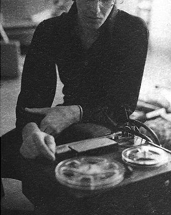

"Larry John McNally's songs have the plainspoken eloquence of a Raymond Carver story with fluid
guitar work that recalls Hendrix."
Larry John McNally's career began in 1981 with the release of his debut album on Columbia Records. Perhaps best categorized as a "Singer-Songwriter-Guitarist", he calls his blend of literary lyrics and blues/folk/jazz guitar style, "Folk-Hendrix". He continues to record and perform both as a solo artist and with his trio in clubs and concert venues from Tokyo to Kokomo. He is well-known in many circles as a songwriter's songwriter. His lyrical guitar-driven songs have been covered by artists from The Eagles, Don Henley to Bonnie Raitt, Rod Stewart, Joe Cocker, the Staple Singers and Aaron Neville. LJM's own recordings are coveted treasures among his devotees and delightful finds for those who happen upon them for the first time. They are filled with songs of passion, angst, city lights, and more, all with the unique ability to create both an aural as well as visual cinematic-like impression.